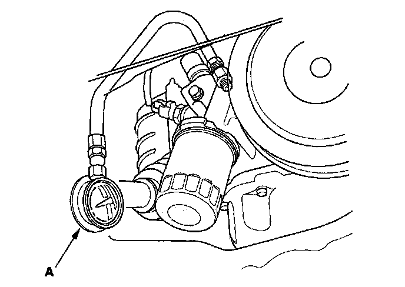

Engine Oil Pressure: Testing and Inspection
Oil Pressure TestIf the low oil pressure indicator stays on with the engine running, check the engine oil level. If the oil level is correct:
1. Remove the engine oil pressure switch, then install an oil pressure gauge (A).

2. Start the engine. Shut it off immediately if the gauge registers no oil pressure. Repair the problem before continuing.
3. Allow the engine to reach operating temperature (fan comes on at least twice). The pressure should be:
Engine Oil Temperature: 176° F (80° C)
Engine Oil Pressure:
At Idle: 70 kPa (0.7 kgf/cm2, 10 psi) min.
At 3,000 rpm: 490 kPa (5.0 kgf/cm2, 71 psi) min.
4. If oil pressure is out of specifications, inspect these items:
^ Inspect the oil pressure relief valve.
^ Check the oil screen for clogging.
^ Inspect the oil pump.